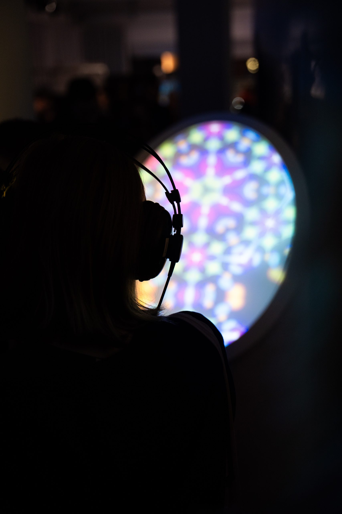
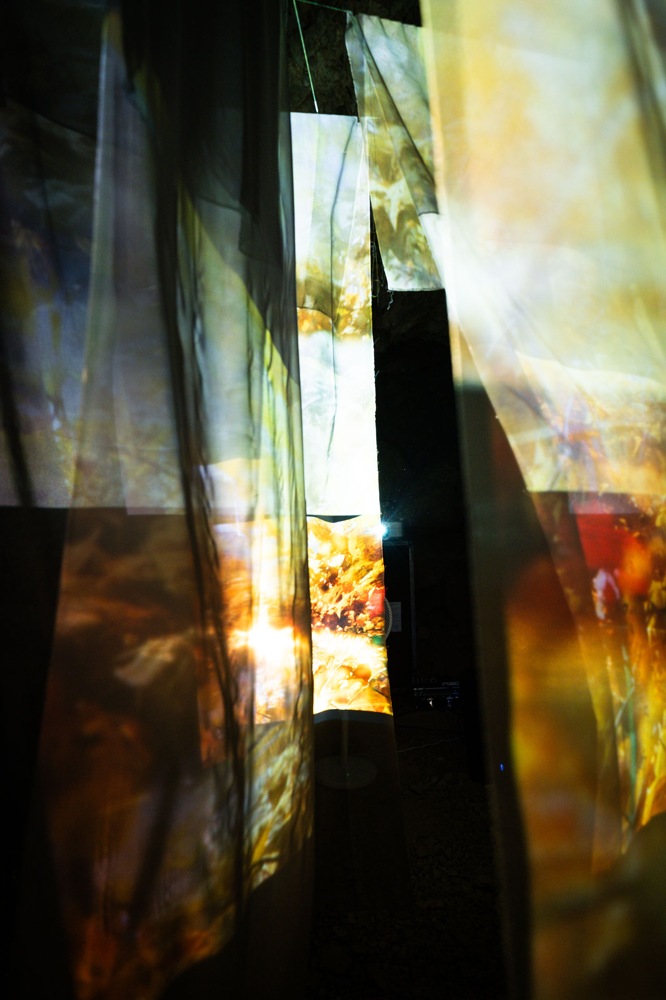
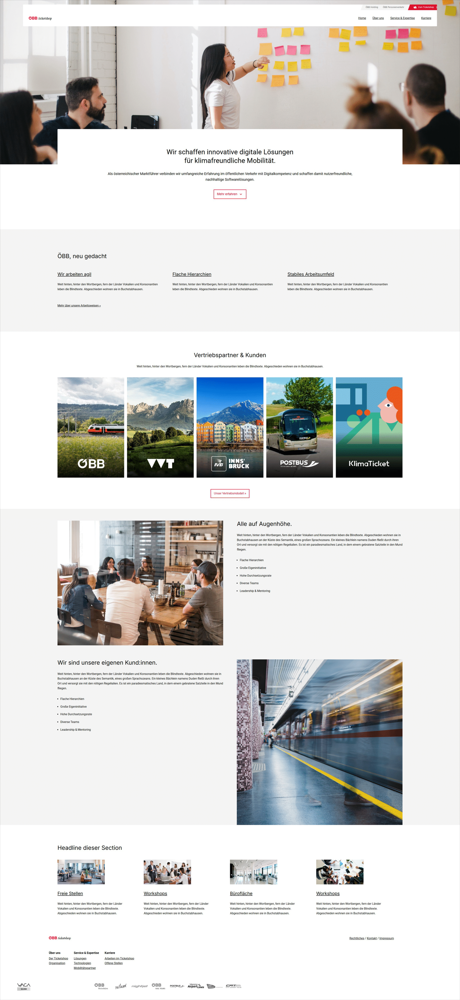
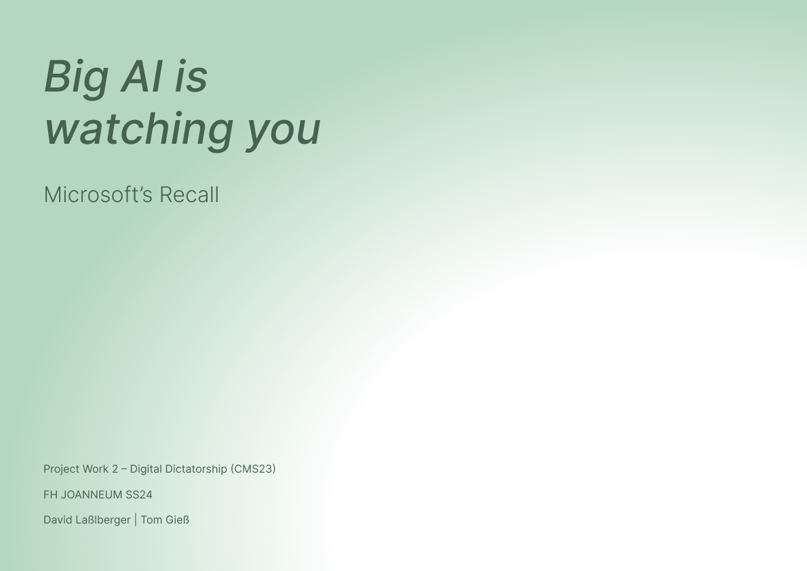
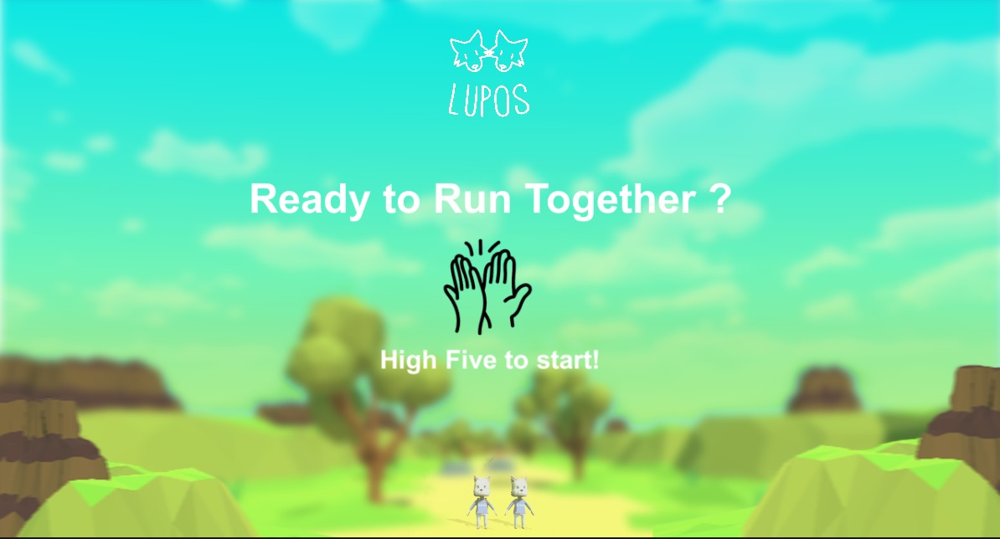

INTERACTION DESIGNER
Bridging the gap between
digital systems & physical spaces.
Selected Works

Master Thesis
User Experience Design, Academic Research

Portfolio Machine
Frontend Programming, Webdesign

Sanolux
Visual Concept & Design

ÖBB
UX-Design

Digidic
Digital Product

Game Design Portfolio
3D artist, game design, programming

Hackathon Switzerland
conception, user experience design, presenting, Rapid Prototyping

Projection Mapping
conception, technical implementation

Storii
Concept Design, Art

UXD
concept and packaging design

Foto © Maximilian Cathan
About Me
I specialize in Interaction Design and bridging the gap between digital and physical spaces. My work often explores Generative Art, focusing on immersive environments.
With a background in User Research, I ensure that every visual spectacle is grounded in solid usability principles. Whether it's a large-scale Installation or a mobile app, the goal is always to reduce cognitive load and spark delight.
Skills & Tools
UX/UI, Interaction Design, Prototyping, Wireframing, Figma, Adobe Suite, Blender
HTML/CSS/JS, Creative Coding (p5.js), Arduino, Unity, Python